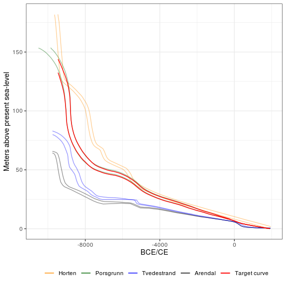

The package shoredate offers methods to shoreline date coastal Stone Age sites based on their present-day elevation and the trajectory of past relative sea-level change. Shoreline dating is based on the premise that coastal Stone Age sites in large parts of Fennoscandia were located on or close to the shoreline when they were in use. The package and method as implemented here was originally developed for the Norwegian Skagerrak coast in south-eastern Norway, based on an empirically derived estimate of the likely elevation of sites above sea-level when they were occupied (Roalkvam 2023).
While the package offers ways to extend and adjust the method for application in other areas which have been characterised by a monotonic trajectory of relative sea-level regression, the ways and degree to which the procedures are directly applicable elsewhere is largely undetermined and likely to vary between contexts. Do also note that as the method is dependent on regularities in human behaviour, and as the Roalkvam (2023) study provides an initial formalisation of the method, it is hefted with unexplored uncertainties, also within the core area for which it was developed. In sum therefore, the dates achieved with the package should be treated with care.
Installation and loading
shoredate can be installed from CRAN with:
install.packages("shoredate")The latest development version can be installed from GitHub using devtools:
# install.packages("devtools")
devtools::install_github("isakro/shoredate")When it has been installed the package can be loaded:
Geographical and temporal coverage
As the method of shoreline dating is determined by relative sea-level change, it is dependent on reliable geological reconstructions of this development. The method as outlined here was therefore originally developed for the Skagerrak region of south-eastern Norway – extending from Horten in the north east to Arendal in the south west (see figure below). This region has newly compiled shoreline displacement curves for Horten (Romundset 2021), Porsgrunn (Sørensen et al. 2014; Sørensen et al. 2023), Tvedestrand (Romundset 2018; Romundset et al. 2018) and Arendal (Romundset 2018). The region also formed the study area for Roalkvam (2023), in which the method and its parameters were derived. The remainder of this document and the main vignette focuses on this area. It is, however, possible to adapt the procedures for application in other regions, which is outlined in the second vignette.
The first figure below shows the location of the spatial limit within which the method was originally derived. The shoreline isobases in the second figure represent contours along which the shoreline displacement has followed the same trajectory. These correspond to the displacement curves and place names in the third figure, which also indicates the temporal coverage of the method within the region.

As human occupation only occurred some time after the retreat of the Fennoscandian Ice Sheet, the currently oldest known sites in Norway are from around 9300 BCE (e.g. Glørstad 2016). The oldest possible age to achieve with shoredate in the Skagerrak region of south-eastern Norway is 9469 BCE, although no sites are yet known to be that old. A warning is given if a site location is outside the spatial extent outlined above, as this involves a more uncertain extrapolation of the development of shoreline displacement. However, the dating procedure is still performed. Conversely, if a site has an elevation that implies a date older than the lower temporal limit of the displacement curves, it is returned as NA and a warning is given.
In Roalkvam (2023) it was found that sites in the study region tend to be located on or close to the shoreline up until around the transition to the Late Neolithic, c. 2500 BCE, which thus marks the upper limit for the applicability of the method in the region. A date that has a later start date than this is therefore, with the default settings, returned as NA with a warning. The temporal range is indicated by the dashed lines in the plot above that displays the shoreline displacement curves. Additionally, if the probability of a date extends beyond 1950 CE (0 cal BP), thus indicating a site location below the present-day sea-level, this overshooting probability is cut off and the date is normalised to sum to unity.
Interpolating shoreline displacement to a site location
To shoreline date a site, a reconstruction of local shoreline displacement is necessary. There are currently four reliable geological displacement curves available from within the study area. Each of these is associated with a shoreline isobase, along which the trajectory of relative sea-level change has been the same. To find the local displacement curve, the curves are interpolated to a site location using inverse distance weighting, where the default is to weigh the interpolation by the square of the inverse distance between site and isobases.
# Create example point using the required coordinate
# system WGS84 / UTM zone 32N (EPSG: 32632)
target_point <- sf::st_sfc(sf::st_point(c(538310, 6544255)), crs = 32632)
# Simple map showing the target location relative to the isobases
# of the displacement curves
target_plot(target_point)
# Interpolate shoreline displacement curve for the target location
target_curve <- interpolate_curve(target_point)
# Plot displaying the interpolated curve, reducing the opacity of the
# geological displacement curves.
displacement_plot(target_curve, displacement_alpha = 0.4)
This interpolation is performed under the hood for each site when calling shoreline_date(), which performs the shoreline dating procedure.
Shoreline dating a site
Below is a basic example outlining how to date a single site by manually specifying the site elevation. The default settings are used for the dating procedure and for plotting the resulting shoreline date.
# Using the example point from above and specifying it's elevation
target_date <- shoreline_date(site = target_point, elevation = 70)
# Call to plot
shoredate_plot(target_date)
The blue gamma distribution on the y-axis represents the likely elevation of the site above sea-level when it was in use, which is described by an empirically derived gamma distribution with the parameters α (shape) = 0.286 and σ (scale) = 20.833. This starts from the elevation of the site. The red envelope is the shoreline displacement curve as interpolated to the site location. The probability from the gamma distribution is transferred to the calendar scale using the displacement curve. This gives the resulting shoreline date in grey, which is underlined by the 95% highest density region (HDR) in black (see Roalkvam 2023 for more details). By default, the shoreline date is normalised to sum to unity. The default resolution on the calendar scale is 10 years.
Calling the date object, which has the custom class shoreline_date, prints the name of the site, its elevation and the HDR:
target_date
#> ===============
#> Site: 1
#> Elevation: 70
#>
#> 95% HDR:
#> 8610 BCE-6910 BCE
#> 5880 BCE-5100 BCEThe first column of a data frame beyond the geometry of the spatial objects will be taken to represent site names. If no such column exist, the sites are simply numbered as they are passed to shoreline_date().
Further documentation
The procedures outlined above have focused on the basic functions and default behaviours of the package when dating a single site in the area for which the package was originally developed. For further usage and a more detailed walk through, see the main vignette by calling vignette("shoredate") or accessing it on the website.
Furthermore, a second vignette, which can be accessed with vignette("extending-shoredate") or viewed on the website, builds on the main vignette and outlines ways in which the package can be applied to other regions.
References
Glørstad, H. 2016. Deglaciation, sea-level change and the Holocene colonization of Norway. Geological Society, London, Special Publications 411(1):9–25. DOI: 10.1144/SP411.7
Romundset, A. 2018. Postglacial shoreline displacement in the Tvedestrand–Arendal area. In The Stone Age Coastal Settlement in Aust-Agder, Southeast Norway, edited by Reitan, G. and Sundström, L. Cappelen Damm Akademisk, Oslo, pp. 463–478. DOI: 10.23865/noasp.50
Romundset, A. 2021. Resultater fra NGUs undersøkelse av etteristidas strandforskyvning nord i Vestfold. Geological Survey of Norway, Trondheim.
Romundset, A., Lakeman, T.R. and Høgaas, F. 2018. Quantifying variable rates of postglacial relative sea level fall from a cluster of 24 isolation basins in southern Norway. Quaternary Science Reviews 197:175e192. DOI: 10.1016/ j.quascirev.2018.07.041
Roalkvam, I. 2023. A simulation-based assessment of the relation between Stone Age sites and relative sea-level change along the Norwegian Skagerrak coast. Quaternary Science Reviews 299:107880. DOI: 10.1016/j.quascirev.2022.107880
Sørensen, R, Henningsmoen, K.E. Høeg, H.I. and Gälman V. 2023. Holocen vegetasjonshistorie og landhevning i søndre Vestfold og sørøstre Telemark. In The Stone Age in Telemark. Archaeological Results and Scientific Analysis from Vestfoldbaneprosjektet and E18 Rugtvedt–Dørdal, edited by Persson, P. and Solheim, S., in press.
Sørensen, R, Henningsmoen, K.E. Høeg, H.I. and Gälman V. 2014. Holocene landhevningsstudier i søndre Vestfold og sørøstre Telemark – Revidert kurve. In Vestfoldbaneprosjektet. Arkeologiske undersøkelser i forbindelse med ny jernbane mellom Larvik og Porsgrunn. Bind 1, edited by Melvold, S. and Persson, P. Portal forlag, Kristiansand, pp. 36–47. DOI: 10.23865/noasp.61
Contributing
Contributions and suggestions for improvement are all very welcome. Instructions for contributing can be found in the Guide to Contributing. Please note that this project is released with a Contributor Code of Conduct. By participating in this project you agree to abide by its terms.